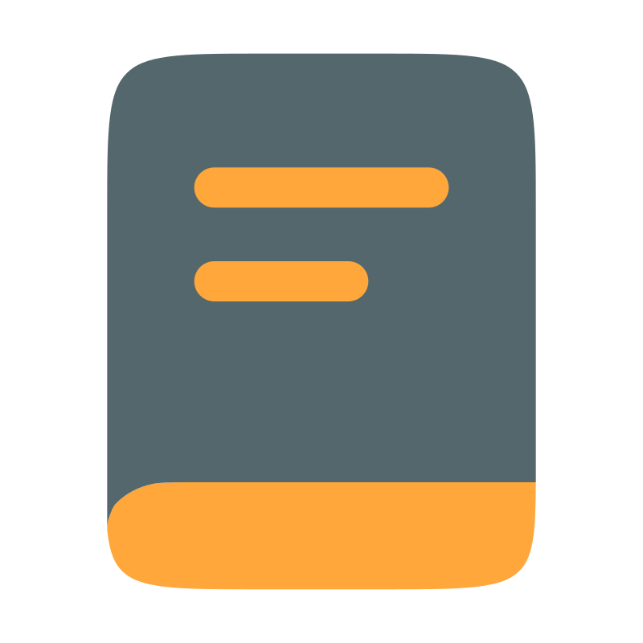

@if (windowState$ | async; as windowStates) {

@if (windowStates['home'] && windowStates['home'].status !== 'closed') {
}

@if (windowStates['experiences'] && windowStates['experiences'].status !== 'closed') {
}

@if (windowStates['projects'] && windowStates['projects'].status !== 'closed') {
}
@if (windowStates['contact'] && windowStates['contact'].status !== 'closed') {
}